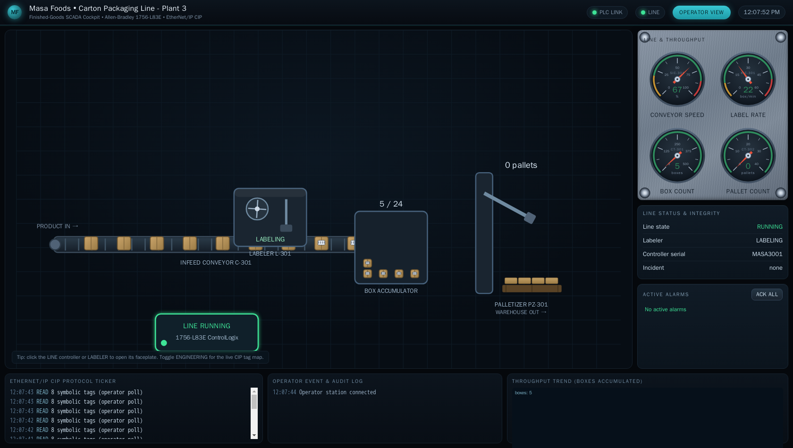
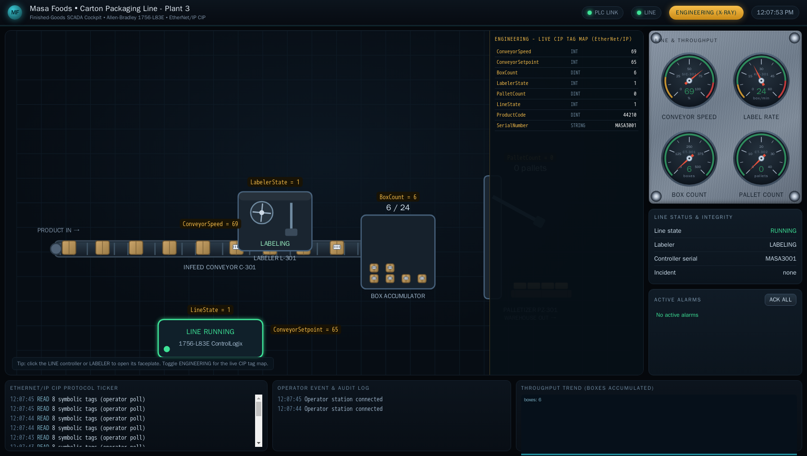

Exercise ICSPT-5.2: Phantom Pallet
Engagement Status
| Client | Masa Foods, Inc. (fictional) |
|---|---|
| Role | OT Security Engineer, Plant 3 |
| Phase | Discovery Protocol Literacy (CIP) Detection (unauthorized writes) Reporting |
What you know so far: Exercise 5.1 gave you fluency in CIP tag enumeration and reads on the Plant 3 packaging PLC. You inventoried all nine tags and extracted the commissioning certificate. Reyna Alvarado has now received a complaint from the packaging floor supervisor: the pallet count on the HMI does not match the physical pallet count at the end of the line. Pallets appear in the system that were never built. Reyna suspects an unauthorized writer on the OT network and wants you to confirm or deny the anomaly using CIP reads only.
Environment Checklist
Exercise 5.2 uses the same packaging PLC as Exercise 5.1. If you completed the environment setup in 5.1 (pycomm3 installed, plc-packaging.masa.local in /etc/hosts), verify connectivity and continue.
Kali
All three must succeed. If any fail, return to the Environment Checklist in Exercise 5.1 and repeat the setup steps.
Scenario
The Plant 3 packaging floor supervisor has reported a discrepancy: the HMI shows 6 completed pallets, but the physical staging area holds only 4. The gap appeared overnight and has been growing. Reyna Alvarado suspects that something on the network is writing to the PalletCount tag without authorization. Your job is to monitor the tag over time, detect the unauthorized increments, and find the evidence that confirms the phantom source.
Why this matters
Unauthorized tag writes are one of the most dangerous attacks on an ICS network. A write to a setpoint tag can change motor speed, valve position, or heater temperature. A write to a counter tag (like PalletCount) can corrupt production records, trigger false alarms, or mask real alarms. The technique you learn here, polling a tag at intervals and comparing values against the expected process rate, is the same technique SOC analysts use to detect unauthorized Modbus writes, S7 datablock modifications, and CIP tag tampering on production networks. Exercise 5.2 builds the detection muscle for CIP.
| Credentials in scope | Username | Password | Where it is used |
|---|---|---|---|
| Plant 3 HMI (reference) | plant_op |
masa_op_2025 |
Not used in this exercise |
The operator cockpit
The pallet-count complaint started on the operator cockpit, so it helps to see the screen the floor supervisor is reading. Open it in a browser at the address shown for ophmi-packaging in the Exercise Network panel (HTTP, port 80); from the in-lab Kali the name ophmi-packaging.masa.local also resolves. The cockpit animates the conveyor, labeler, box accumulator, and palletizer in real time and carries a live CIP traffic ticker, so the phantom PalletCount writes you are hunting land on the same display the supervisor watches.

Flip the cockpit into its Engineering view and every element is labelled with the live CIP tag behind it, so the palletizer reads PalletCount straight off the HMI. Seeing the tag bound to its element is what lets you tie a polled anomaly back to the physical asset the supervisor is questioning.

Objectives
- Read
PalletCounttwice with a 15-second interval between reads - Calculate the delta and determine whether the increment rate is consistent with the physical conveyor speed
- Enumerate the tag list to find evidence of the phantom injector
- Read the phantom evidence tag and submit the flag
| Detail | Value |
|---|---|
| Difficulty | Intermediate |
| Estimated Time | 20 to 30 minutes |
| Prerequisites | Exercise 5.1 (CIP basics) |
| Flag | Source | Found? |
|---|---|---|
OCR{...} |
PhantomFlag tag (appears only during injection) |
Background: Detecting Unauthorized Writes via Polling
ICS protocols like Modbus, S7comm, and CIP do not natively log who wrote a value or when. The PLC stores only the current value of each tag. If two clients write to the same tag, the PLC applies both writes silently. There is no audit trail, no write log, no "last writer" field.
The detection approach is polling: read a tag at known intervals, record the values, and compare the observed rate of change against what the physical process should produce. If the value changes faster (or in a direction) that the process cannot explain, an unauthorized writer is active.
Polling math for PalletCount
The packaging line produces approximately 1 pallet for every 24 boxes. At a conveyor speed near 65%, the line produces roughly 1 box every 3 seconds, meaning 1 pallet every ~72 seconds. If PalletCount increments more than once in 15 seconds, the increment cannot come from the physical process alone.
Tag list changes as evidence
When an injector process connects to a CIP PLC, it may register additional tags or leave diagnostic markers. Comparing the tag list under normal conditions (9 tags from Exercise 5.1) against the tag list during the anomaly can reveal new tags that should not exist.
Tools You Will Need
| Tool | Purpose |
|---|---|
pycomm3 |
CIP/EtherNet/IP client library |
time.sleep() |
Introduce a 15-second polling interval |
Walkthrough
Stage 1: Baseline PalletCount
Start by reading the current PalletCount value so you have a baseline. Record both the value and the timestamp so you can calculate the rate of change after the second read.
Kali
The exact value depends on how long the simulation has been running. Record it.
Stage 2: Poll and Compare
Read PalletCount twice with a 15-second gap between reads. The script calculates the delta and prints a verdict. At conveyor speed ~65%, the process should produce at most 1 pallet every ~72 seconds. Any increment of 1 or more in 15 seconds is suspicious because the process alone cannot produce a full pallet that quickly.
Kali
python3 - <<'PYEOF'
import time
from pycomm3 import LogixDriver
with LogixDriver("plc-packaging.masa.local", init_tags=False) as plc:
r1 = plc.read("PalletCount")
t1 = time.time()
print(f"[{time.strftime('%H:%M:%S')}] PalletCount = {r1.value}")
print("Waiting 15 seconds...")
time.sleep(15)
r2 = plc.read("PalletCount")
t2 = time.time()
print(f"[{time.strftime('%H:%M:%S')}] PalletCount = {r2.value}")
delta = r2.value - r1.value
elapsed = t2 - t1
print(f"\nDelta: {delta} pallets in {elapsed:.1f} seconds")
if delta >= 1:
print("ANOMALY: PalletCount incremented faster than the process can produce pallets")
print("An unauthorized writer is active on the CIP network")
else:
print("No anomaly detected in this interval")
PYEOF
Expected output
The phantom injector writes to PalletCount approximately every 12 seconds, so a 15-second window should catch at least one phantom increment.
The injector here only inflates a counter, which corrupts records without halting the line. The same unauthenticated write path reaches control tags too. A single CIP write to LineState faults the whole packaging line, and the cockpit makes that consequence concrete:

Stage 3: Enumerate Tags for Evidence
Compare the current tag list against the 9 tags you found in Exercise 5.1. The phantom injector may have exposed a new tag that was not present during normal operation. Enumerate the full tag list and look for anything unexpected.
Kali
python3 - <<'PYEOF'
from pycomm3 import LogixDriver
BASELINE_TAGS = {
"ConveyorSpeed", "ConveyorSetpoint", "BoxCount",
"LabelerState", "PalletCount", "LineState",
"ProductCode", "SerialNumber", "FlagBlock"
}
with LogixDriver("plc-packaging.masa.local", init_tags=False) as plc:
tags = plc.get_tag_list()
current = {t.tag_name for t in tags}
new_tags = current - BASELINE_TAGS
print(f"Total tags now: {len(tags)}")
if new_tags:
print(f"NEW tags not in baseline: {new_tags}")
for name in new_tags:
val = plc.read(name)
print(f" {name} = {val.value}")
else:
print("No new tags found")
PYEOF
The PhantomFlag tag only exists when the phantom injector is active. Reading its value gives you the flag.
Stage 4: Submit the Flag
Copy the value from PhantomFlag and submit it in the OCR platform.
Output Interpretation
- A
PalletCountdelta of 1 or more in 15 seconds is anomalous. The physical process at ~65% conveyor speed needs approximately 72 seconds per pallet - A delta of 0 in a single 15-second window does not rule out an injector. The injector writes every ~12 seconds, so timing can occasionally cause a miss. Run the poll again if the first window shows no change
- A 10th tag (
PhantomFlag) in the tag list is direct evidence of the injector. Normal operation exposes exactly 9 tags - If you see only 9 tags, the exercise environment may not have started in injection mode. Verify the lab is running the correct exercise (5.2, not 5.1)
Analysis Questions
1. The phantom injector writes PalletCount every 12 seconds. Could you detect it with a single read instead of two?
Reveal answer
A single read shows only the current value, not the rate of change. Without knowing the expected value (for example, from a historian or an independent physical count), a single read cannot distinguish a legitimate PalletCount of 15 from a phantom-inflated 15. Two reads at a known interval give you a rate, and the rate is what makes the anomaly visible.
2. In a production environment, what system would perform this polling automatically?
Reveal answer
An OT historian or a SCADA server polls tags on a configured schedule (typically 1 to 10 seconds for process data). An anomaly detection system sits downstream, comparing polled values against process models or statistical baselines. Commercial products include Claroty, Nozomi Networks, and Dragos Platform. The manual two-read technique in Exercise 5.2 replicates what those systems do at scale.
3. The PhantomFlag tag appeared in the tag list only during injection mode. Would a real attacker leave such obvious evidence?
Reveal answer
A real attacker would not create a new tag. Creating a tag requires engineering-level CIP access and would be immediately visible to anyone who enumerates the PLC. A real attacker would write to an existing tag (like PalletCount) using a standard CIP Write Tag service, leaving no tag-list fingerprint. The PhantomFlag tag exists in the simulator to give students a clear confirmation signal. In a real investigation, the only evidence would be the anomalous rate of change and, if network monitoring is active, the CIP Write packets from an unexpected source IP.
Defensive Recommendations to Masa
| Finding | Risk | Mitigation |
|---|---|---|
| PalletCount accepts writes from any CIP client on the OT LAN | Critical | Configure the ControlLogix to restrict write access to the HMI and engineering workstation only, using CIP Security or firewall rules on TCP/44818 |
| No write-audit trail exists on the PLC | High | Deploy an OT network monitor (Claroty, Nozomi, Dragos) that logs all CIP Write Tag services and alerts on writes from non-baseline source IPs |
| Phantom writes corrupt production records | Medium | Cross-validate PalletCount against the physical palletizer photoelectric sensor count in the historian, alerting when the two diverge by more than 1 |
| Tag list enumeration is unrestricted | Medium | Enable CIP Security to require TLS client certificates before allowing tag-list reads |
Key Takeaways
- CIP PLCs do not log who wrote a tag value. Detection requires external polling and rate-of-change analysis
- Reading a tag twice at a known interval and computing the delta is the simplest anomaly detection technique for ICS protocols
- Comparing the current tag list against a known baseline can reveal injector artifacts, though real attackers would not leave new tags
- The phantom injector demonstrates a write-based attack that corrupts production counters without triggering any PLC alarm
- OT network monitoring that captures CIP Write Tag packets and correlates source IPs is the primary defense against unauthorized writes